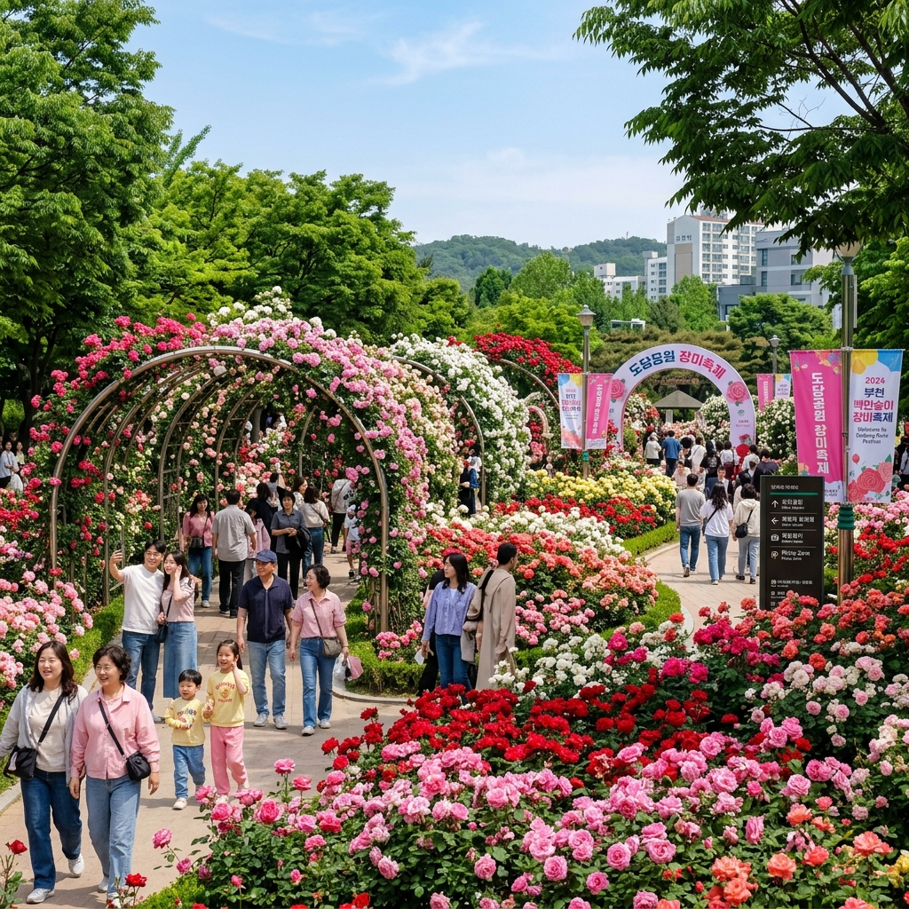
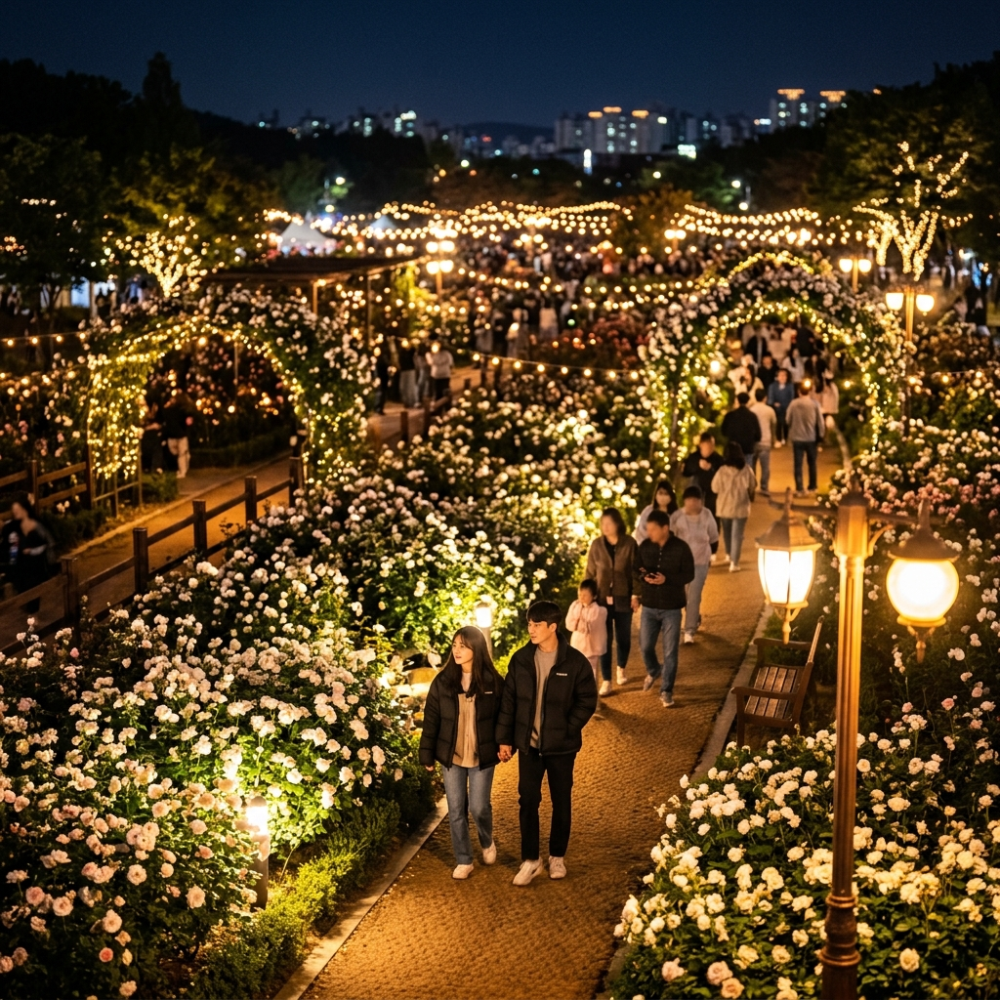

| 항목 | 내용 |
|---|---|
| 축제 기간 | 2026.05.23(토) ~ 06.07(일) |
| 장소 | 경기도 부천시 춘의동 도당공원 |
| 입장 | 무료 |
| 교통 | 지하철 7호선 춘의역 1번 출구 도보 15분 |
부천 도당공원 장미축제는 부천시가 매년 초여름에 개최하는 대표 도심 꽃 축제로, '백만송이 장미'라는 애칭처럼 공원 전체가 장미로 뒤덮이는 장관을 자랑합니다.
도당공원은 부천 시민들의 일상 산책 공간이지만, 축제 기간에는 국내외 관광객까지 몰리는 특별한 명소로 변신합니다.
장미 원종부터 현대 품종까지 수십 가지 다양한 장미들이 각자의 개성을 뽐내며, 각 구역마다 품종 안내 표지판이 설치되어 있어 장미 공부도 할 수 있습니다.
입장이 완전 무료이기 때문에 부천과 인접한 서울 서부, 인천, 경기 서부 주민들에게 특히 인기 있는 나들이 코스입니다.
축제 기간에는 야외 공연과 먹거리 장터가 함께 열려 단순한 꽃 구경을 넘어 종합 봄 축제로 즐길 수 있습니다.

2026년 부천 백만송이 장미축제는 5월 23일(토) 개막, 6월 7일(일) 폐막으로 약 16일간 진행됩니다.
공원 입장은 연중 무료이며 축제 기간에도 별도 입장료가 없습니다.
공식 프로그램(버스킹, 체험 부스 등)은 주말 오전 10시~오후 6시 사이에 집중됩니다.
평일 오전과 저녁에는 방문객이 상대적으로 적어 여유롭게 꽃을 감상할 수 있습니다.
야간 조명 행사가 일부 진행될 경우 장미에 조명이 비치는 황홀한 야경을 즐길 수 있으므로, 부천시 공식 안내를 사전에 확인하시기 바랍니다.
도당공원은 대중교통 접근이 매우 편리합니다.
지하철 7호선 춘의역 1번 출구에서 도보 약 15분, 또는 마을버스 이용 시 5~10분 거리입니다.
부천역(1호선)에서는 마을버스를 이용해 약 15~20분이면 도착합니다.
자가용 이용 시 도당공원 주차장을 이용할 수 있으나 축제 기간 주말에는 주차 공간이 매우 부족합니다.
대중교통 이용을 적극 권장하며, 자가용 방문 시 공원 주변 유료 주차장이나 인근 상가 주차장을 활용하는 방법도 있습니다.
부천시는 축제 기간에 임시 주차장을 운영할 수 있으니 부천시 공식 안내문을 참고하세요.
도당공원 장미축제에서 특히 인기 있는 포토스팟을 소개합니다.
장미 아치 터널은 도당공원 장미축제의 상징적인 포토존으로, 아치형 터널 양쪽에 덩굴장미가 가득 피어 터널 안에 들어서면 사방이 꽃으로 둘러싸이는 마법 같은 공간이 연출됩니다.
분수대 주변 장미 원형화단은 고전적인 영국 정원 스타일로 조성되어 있으며, 분수대와 장미가 어우러진 사진이 특히 아름답게 찍힙니다.
공원 언덕 위 파노라마 구역에서는 공원 전체를 내려다보며 광각 사진을 담을 수 있습니다.
조기 방문을 권장하는 이유 중 하나는 오전에 꽃잎에 이슬이 맺혀 있어 촬영 퀄리티가 오후보다 높기 때문입니다.
도당공원은 면적이 넓지 않아 1시간~1시간 30분이면 주요 구역을 모두 둘러볼 수 있습니다.
추천 코스는 공원 정문 → 장미 원형화단 → 아치 터널 → 언덕 전망대 → 분수 광장 → 먹거리 장터 → 정문 복귀로 이어집니다.
언덕 전망대까지는 완만한 오르막이 있지만 어른 아이 모두 어렵지 않게 오를 수 있습니다.
코스 중간중간 벤치가 배치되어 있어 쉬어 가면서 꽃 향기를 만끽할 수 있습니다.
관람이 끝난 후 먹거리 장터에서 간식을 즐기며 여운을 이어가는 것이 많은 방문자들의 방식입니다.
부천 도당공원 장미축제는 주간 방문만큼이나 야간 방문도 인기 있습니다.
일몰 후 공원 내 조명이 켜지면 장미 품종에 따라 색감이 달라지고, 주간과는 전혀 다른 몽환적인 분위기가 연출됩니다.
특히 흰 장미는 야간 조명을 받으면 더욱 선명하고 아름다워 인생 사진을 건지기 좋습니다.
야간 방문 시 어두운 꽃밭 사진을 위해 삼각대나 야간 모드를 지원하는 스마트폰을 활용하세요.
저녁에는 공원이 다소 서늘해지므로 얇은 겉옷을 챙기는 것을 잊지 마세요.
도당공원 근처에는 부천 시민들이 즐겨 찾는 소규모 카페와 식당들이 자리하고 있습니다.
공원 인근 카페에서 아이스 아메리카노 한 잔 들고 꽃밭 산책을 시작하는 것이 요즘 트렌드입니다.
부천 시내에서는 한식 밥상부터 퓨전 카페까지 다양한 선택지가 있으며, 이 지역 특색 있는 음식으로는 부천닭갈비와 콩나물국밥이 있습니다.
현문 입구 인근 음식 가게들은 장미축제 기간에 한식 도시락을 특가로 판매하기도 하니 현장 확인을 권장합니다.
